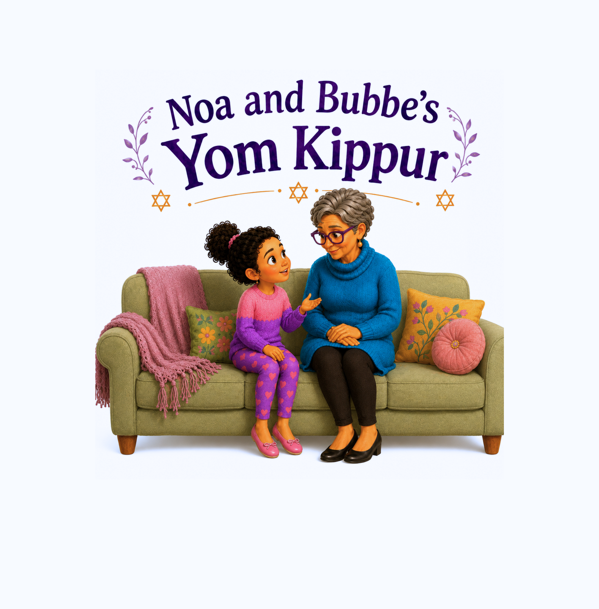

01
Prepare together
Noa helps Bubbe make food for the family’s break-fast meal.
A warm family story for the High Holidays
A children’s illustrated book about reflection, apology, making things right, and beginning again.

The story
Noa spends Yom Kippur with Bubbe and her family. As the day unfolds, she thinks about moments when she was unkind, offers sincere apologies, and learns that everyone can try to repair harm.
The story centers family closeness, Jewish ritual, and a clear message: mistakes do not have to be the end of the story.

Inside the book
Warm illustrations carry children from preparation and family gathering to reflection, apology, repair, and celebration.
Noa helps Bubbe make food for the family’s break-fast meal.

Noa thinks carefully about her choices during the past year.

She apologizes to Shira and Ezra and chooses a kinder next step.

The family breaks the fast together and welcomes a sweet new year.

“Yom Kippur helps us remember that we can try to make things right.”
— Bubbe
For families and educators
Words in the book
About the author
Victoria Asbury-Kimmel is a wife, mother of three young children, and author of the Noa and Bubbe series. Although she was not raised Jewish, she and her husband are raising their children in a Jewish home, celebrating the traditions, holidays, and values that shape their family’s life.
As a Black American raising biracial children, Victoria wanted her family—and families like theirs—to be represented in children’s books. She believes every child deserves to see families that reflect the richness of the world around them, including within Jewish stories.
A sociologist by training, Victoria understands the powerful role that books and other media play in shaping children’s ideas about themselves and others. Through the Noa and Bubbe series, she hopes to create warm, engaging stories that introduce Jewish traditions while celebrating family, kindness, and belonging.
Noa and Bubbe’s Yom Kippur is the first book in a series featuring Noa, Bubbe, and their family as they experience Jewish holidays and traditions together.

Bring the story home